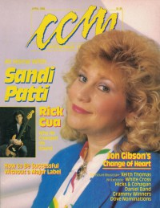

CMnexus
:
Contemporary Christian culture, music, and media.
Magazines
Profiles
Dove Awards
cmnexus.org
CM
nexus
→
Profiles
→
A
→
Warren Anderson
Warren Anderson
Writing Credits: 1 of 1
< -- Previous
Next -- >
1
Writing credits listing
May 1987 in
CCM
9.11
Gary McSpadden
-
One Song, One Voice
Jun 1987 in
CCM
9.12
The Gaither Vocal Band
-
One X 1
Jul 1987 in
CCM
10.1
Jean Costner
-
We Celebrate!
Kim Noblitt
-
Kim Noblitt
Oct 1987 in
CCM
10.4
Larnelle Harris
-
The Father Hath Provided
Nov 1987 in
CCM
10.5
Maranatha Praise
-
9
Dec 1987 in
CCM
10.6
2nd Chapter of Acts
-
Far Away Places
Jan 1988 in
CCM
10.7
First Call
-
Somethin' Takes Over
Feb 1988 in
CCM
10.8
Cynthia Clawson
-
Hymnsinger
Gordon Jensen
-
Tuesdays and Thursdays
Mar 1988 in
CCM
10.9
David Baroni
-
The Heart Matters
Luke Garrett
-
Ever Constant... Ever Sure

Apr 1988 in
CCM
10.10
"Home & Heart"
Sandi Patty
Sandi Patty
-
Make His Praise Glorious
GLAD
-
The Acapella Project
Jul 1988 in
CCM
11.1
Billy Sprague
-
La Vie
Steve Green
-
Find us Faithful
Aug 1988 in
CCM
11.2
Steven Curtis Chapman
-
Real Life Conversations
Phil Driscoll
-
Classic Hymns - Vol. 1
Nov 1988 in
CCM
11.5
Twila Paris
-
For Every Heart
Jan 1989 in
CCM
11.7
Bruce Carroll
-
The Richest Man in Town
Buddy Greene
-
Slice of Life
Feb 1989 in
CCM
11.8
Scott Wesley Brown
-
To the Ends of the Earth
Mar 1989 in
CCM
11.9
Paul Smith
-
Back to Who I Am
Jeoffrey Benward
-
The Redeemer
Apr 1989 in
CCM
11.10
John Michael Talbot
-
The Lover and the Beloved
May 1989 in
CCM
11.11
Debbie McClendon
-
Morning Light
Steve Fry
-
Thy Kingdom Come
Jul 1989 in
CCM
12.1
Larnelle Harris
-
I Can Begin Again
Aug 1989 in
CCM
12.2
Morgan Cryar
-
Like A River
Mike Eldred
-
Uncommon Love
Oct 1989 in
CCM
12.4
First Call
-
God Is Good
Dec 1989 in
CCM
12.6
Chris Christian
-
Focus
Jan 1990 in
CCM
12.7
Luke Garrett
-
Fine Joy
Jubilee
-
My Refuge
Ray Boltz
-
The Altar
Feb 1990 in
CCM
12.8
One
-
Spirit to Spirit
Rick Crawford
-
Be Still My Heart
Mike Warnke
-
Live ... Totally Weird
Mar 1990 in
CCM
12.9
Voices of Praise
-
Strong and Mighty Hands
Petra
-
Petra Praise... The Rock Cries Out
Jun 1990 in
CCM
12.12
"Beyond Rock"
Petra
,
Josh McDowell
"Bridging The Gap"
Josh McDowell
Jul 1990 in
CCM
13.1
Petra
-
Beyond Belief
Jan 2000 in
Worship Leader
9.1
Ragan Courtney
,
Buryl Red
-
Celebrate Life!
Writing Credits: 1 of 1
< -- Previous
Next -- >
1
CMnexus
(noun)
The magazine index
of modern music
and Christianity
© 2011 CMnexus. Last updated December 2020.
Contact:
Rants and other correspondence to:
editor -AT- cmnexus
-DØT- org
About